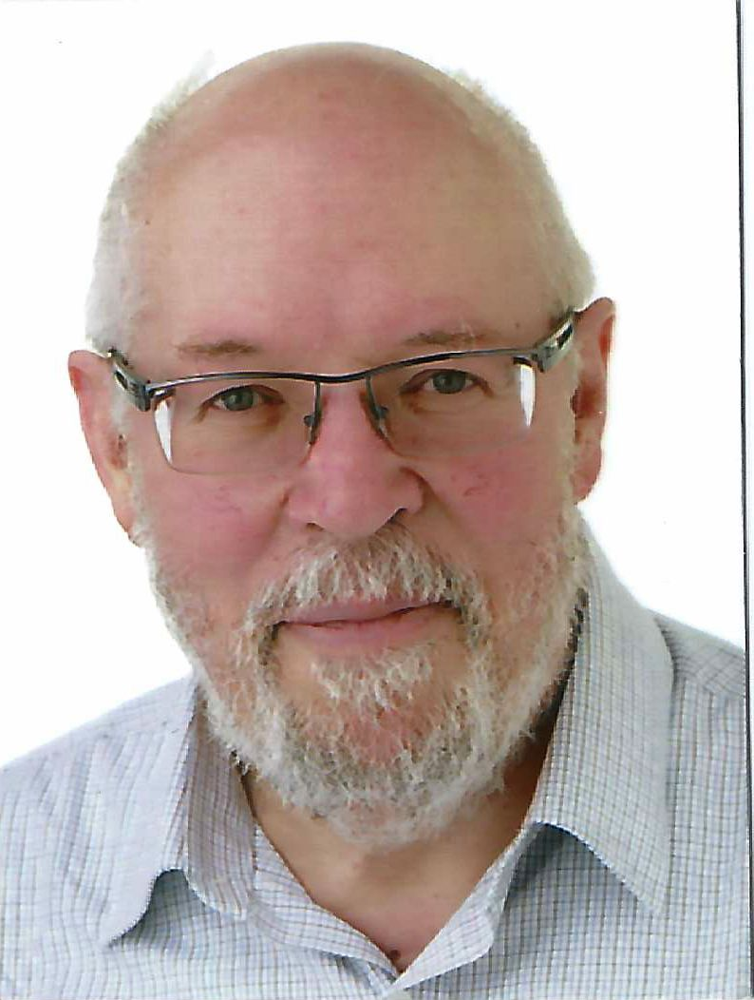

Dr. Raymond BISDORFF
| Emeritus Professor of Computer Science and Applied Mathematics | ||
| University of Luxembourg | ||
| Computer Science and Communication Research Unit (CSC) |  | |
| Interdisciplinary Lab for Intelligent and Adaptive Systems (ILIAS) | ||
| 50, Bvd G.-D. Charlotte
L-1330 Luxembourg G.D. Luxembourg (Europe) |
||
|
(+352) 45 64 46 (Home office) | ||
| Fax: | (+352) 45 64 36 (Home fax) | |
| Email: | raymond.bisdorff@uni.lu | |
| Url: | https://rbisdorff.github.io | |
 This Web Site, designed by Raymond Bisdorff, is licensed under a Creative Commons Attribution 3.0 Luxembourg License. Best seen with Firefox.
This Web Site, designed by Raymond Bisdorff, is licensed under a Creative Commons Attribution 3.0 Luxembourg License. Best seen with Firefox.